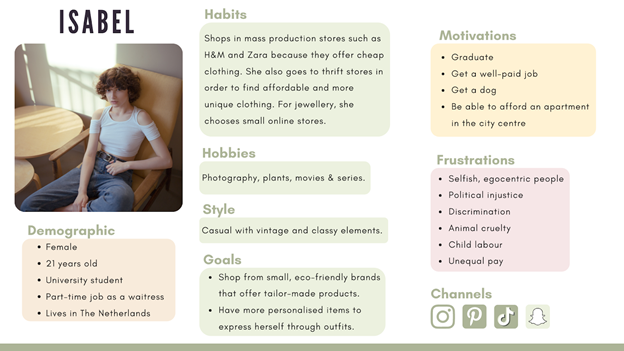

Communication message: The social media campaign serves the purpose of creating brand awareness, promoting our product and inspiring people to go back in style to the past and re-visit old trends with a modern twist.
Affect: We want our target audience to feel unique, special and transported back in time to the past.
Response: We want our target audience to repost our photos on Instagram on their Instagram Stories and to pin our photos on Pinterest to their mood boards.
Segmentation:
Geographic: Living in central Europe, in urban areas
Demographic: Female, male and non-binary, ages 16-25, having a high school or a higher education diploma, middle class.
Psychographic: Wants to wear timeless pieces of clothing and accessories. Chooses more sustainable clothing stores with high-quality products.
Behavioral: Uses social media daily - social media includes Instagram, TikTok, Snapchat and Pinterest. Shops both offline and online (online brands include Zalando). On average, spends 6 hours a day on social media apps.
Target group:
Age: Young adults between the ages of 16-25
Gender: Female, male, non-binary.
Job: side-jobs (working in a cafe, restaurant, private tutors, etc.)
Income: 250-300 euros per month (as an average salary in the Netherlands)
Social media: Instagram, TikTok, Pinterest, Snapchat – an average of 5-6 hours per day How the person will find out about our brand: social media or hear about it from other students. Values of our customer: Kindness, Awareness, Creativity
The target audience has been based on the survey and interviews conducted by our team.
Persona:
Media tactics:
For social media platforms we decided to choose Instagram and Pinterest. We choose Instagram because it fits our target audience, it is mostly used by young adults. Instagram is a good platform to spread awareness and reach a large audience. Instagram is a great social media platform to create your own profile for your brand. We choose Pinterest because this platform is used as an inspiration source. Since our brand is about customising your own watch our target audience is creative and will mostly have Pinterest. Pinterest is also a great social media platform that can be connected to Instagram. Posts from Instagram can be pinned on Pinterest. When someone sees the pin on Pinterest they can easily click and go to our Instagram page.
Positioning:
Our brand is different from others because the customer can design their watch themselves which makes the product personal and more meaningful. We offer over 100 different combinations for the consumer. We don’t just produce and sell millions of the same watches, every watch is unique. We aim for the high-quality and timeless feel of our product.
Objective:
Instagram: We want to have 20 likes on every post on Instagram and reach 100 followers at the end of the project. Pinterest: We want to have 100 impressions on Pinterest at the end of the project.
Communication and media plan:
As for Instagram, we decided to post every other day. This is because we wanted to have an active account to ensure constant engagement. The reason why we didn’t decide to post every day is to avoid making our account feel like spam to our (potential) followers. In addition to posting three times a week, every Friday we post ‘Friday feelings’ on our Instagram story. We use aesthetic pictures from Pinterest and repost these on our story for people to enjoy the aesthetics of our brand and get inspired by it. The things that are posted on Instagram are posted on Pinterest too. They are pinned via Instagram on Pinterest. This makes a great connection between the two social media platforms. When someone finds the pin on Pinterest they can go directly to our Instagram account. As for our hashtags we used an online hashtag generator that found hashtags that fit our brand. We used the following hashtags:#watch #time #brand #ootd #fashion #vintage #vintagevibe #style #jewerly #lifestyle #wristwatch #thriftshopping #rolex #antique #retro #vintagestyle #watches #horloge #accesoires #vintagefashion
Social media accounts:
Instagram PinterestScreenshots of our social media accounts:
Please see Appendix A
Planning:
Please see Appendix B
Learning points:
We have successfully reached our objectives. Our Instagram account has (at the time of writing) 108 followers, with (on average) 20 likes on each post. On Pinterest, we got (at the time of writing) 339 impressions. The number of impressions we received exceeded our expectations. In the end, we got 3 times more impressions than we anticipated! We found out that it’s also possible to see the total impressions on your Instagram account. Beforehand we thought this was only possible per post. In total, we got 1349 impressions on Instagram.
What we learned from conducting this marketing campaign:
-We need to have social media posts ready a couple of days in advance. In the beginning, we made 4 social media posts and stopped after this. When the 4 days were over we were stressed because we didn’t have more social media posts ready for the other days. This made us skip one day of posting because we didn’t have a photo prepared.
-An interesting and clever hashtag tactic is necessary to gain new followers. When liking posts with the same hashtags our engagement would rise and we would get more followers. The first day we did this we got around 20 more followers.
-It’s also possible to see the total impressions on an Instagram account, we thought it was only possible to see this information per post.
-Posting “Friday Feels” on our Instagram Stories was a way for us to share our brand’s aesthetic with the (potential) customers and get them inspired by it.
Future planning:
Our current planning was to post three times a week on Instagram (on Tuesday, Thursday and Saturday) and “Friday Feels” on Instagram Stories. On Wednesday and Friday, we would repost our photos on Pinterest. This schedule turned out to be successful, therefore we’d like to maintain it in the future.
What we could do in the future:
Post more video content - since Instagram aims to be a video-focused app, it would be smart to engage the (potential) customers through videos. We could also start a campaign on TikTok and thereby open another channel for our brand to increase awareness and reach our target audience.
Create a physical prototype in order to promote the product on TikTok as well. After conducting a survey and interviews, we learned that the majority of people interviewed use TikTok daily. Therefore, it offers us room for advertising our product through short video content.
If the project were to continue, we would definitely have to have a two-month overview of the content that we would release. It’s a necessity if we want to create engaging posts without rushing every week to edit the photos or videos and ensure that the marketing campaign is coherent.